戻る
よりしろトランス
第三話
作：乾
■登場人物紹介
佐倉 伊織（さくら いおり）
神様が依り付いてしまった為に女になってしまった不幸な主人公。
本人は文句を言いつつもしばらくの間女として生活する事には納得している。
前回の騒動で体が幼児化してしまって大変。

天城 裕香（あまぎ ゆうか）
伊織の幼馴染。トラブルメーカーであちこちから厄介ごとを持ってくる。
現在は小さくなった伊織にいたくご執心の様だ。

沖田 誠二（おきた せいじ）
伊織の幼馴染。悪人顔だが一番の常識人、溜め込んだ雑学で色々助言をしてくれる。
伊織からの信頼も厚い。しかしその穏やかな性格が仇となって黙っているととても影が薄くなってしまう。

巳嶋 小夜（みしま さよ）
安曇神社の神主の娘。伊織に取り付いた神「あずさ様」と面識がある。
コックリさんで神様と会話する事が出来る。

佐倉 香苗（さくら かなえ）
伊織の母。突然息子が女になってもまったく動揺せず、おもちゃにするＴＳ物特有の母親。
現在着々と息子を娘に改造中。
あずさ様（あずささま）
今回の騒動の元凶。伊織を女性にした張本人。
尊大なしゃべり方と悪役っぽい笑い方が特徴の茶目っ気ある神様。
第三話
俺はその日何回目かのあくびを噛み殺した。
今は古文の授業中、俺が最も苦手とし一番眠くなる教科だ。
暖かい日差しと先生の念仏は異常なほど眠気を誘い、さっきから眠くてしょうがない。
それにしても今日はいつもより眠い様な気がする、眠いというよりは疲れていると言った方が正しいのかな。
全身に纏わりつくような疲労感がある、昨日はそんなに夜遅くまでゲームをしたりはしていないのにおかしいな……。
「では、ここを佐倉。答えてみろ」
古文の荻島先生が俺をご指名だ。
やばい、何にも聞いていなかった。黒板には何だか見たこともない象形文字がならんでいるし。
「えーと……」
俺は口ごもる、いつもの様な日本語の古文なら適当でもなんとかなったかもしれないけど、今黒板に書かれている文字はまったく見たこともないような文字の羅列だ。古文の授業で滅びた古代文明の言葉を習うなんて聞いたこともないけど……。
「なんだ、解からないのか？」
「すいません」
俺は素直に謝ることにした、あがいても無駄だと悟ったからだ。
「たるんどるぞ佐倉。いくら女になったからと言っていつまでもグダグダしているんじゃないぞ」
「は？」
俺が女になったって？ どういうことだろうか。
誰がどう見てもいたって普通などこにでもいる男子生徒のはずだけど・・・。
「ってあれ？ 本当に女の子になってる！」
確かに胸は膨らんでいるし格好もセーラー服だ、おまけに髪もえらく長くなっている。
「何を寝ぼけているんだ？
安曇神社のあずさ様に取り憑かれて女になってしまったって大騒ぎしてたじゃないか」
荻島先生があきれた様に言う。
そう言えばそうだった、あずさ様に女にされたんだっけ。
「しっかりしろ佐倉。お前がそんなんだと皆がっかりしてしまうぞ」
皆？ 何の事だろう。荻島先生が突然おかしな事を言い始めたぞ。
「そうよ、伊織。今日もこんなにみんな集まってくれたんだから」
先生に続き前の席の裕香もおかしな事を口走り始めた。
「おいおい、みんなって誰だよ？」
「ほら、見なさいよ」
裕香が指差した方を見ると、ステージの客席には沢山の人がひしめいている。
「うわっ！。あ、あれ？ なんで俺こんな所にいるんだ…」
なんなんだこのステージは？ いったいこの人たちは何なのだ？
「伊織。この人達はお前の神格を上げるのを手伝う為に集まってくれたんだ」
後ろにいた誠二が俺に説明した。
「あっそうか。 神格を上げるために人気を集めなくちゃいけないんだっけ」
「そうだよ〜。せっかく集まってくれたんだから、そんな格好じゃ失礼だよ」
そう言うと裕香は俺の着ているセーラー服をスポンと一気に脱がし、俺が羞恥心を感じる間もなく８０年代アイドルが着ていた様な衣装に着替えさせた。恐るべき早業だ。
「さあ、伊織。みんながあんたを待ってるんだから、ちゃんと挨拶しなくちゃ」
「あ、ああ」
まだ状況が把握できていない俺の手を引っ張ってステージの前の方へ連れていく。
地平線のかなたまで続いている様に見える客席は人で一杯だ、その人達全員が俺に視線を注いでいる。
今まで生きてきてこんなに注目された事がない俺はメチャメチャ緊張しながらも、いつの間にか持っていたマイクに向かって何とか口をひらいた。
「え〜と。 きょ今日は俺の為なんかにこんなに集まってくれて、あ…ありがとうございます」
つっかえながらもそこまで言うと、会場が爆発したような歓声があがった。
そのとたんステージの横にある人気ゲージがピロンピロンと奇妙な音をたてながらぐんぐん上がっていく。
「それでは、一曲歌っていただきましょう」
なぜか司会の裕香がそんな事を言い始めた。
ちょっとまってくれ、聞いてないぞ！ そんな事。
そんなうろたえる本人を他所にそれっぽい曲がかかる。
いっそう盛り上がる会場にどんどん上がる人気ゲージ。
一万……２万……まだ上がる。
ゲージが上限を振り切った時、俺の体が金色に発光しはじめた。
「ちょっ・・・ちょっとと待ってくれ。もういいから。上がりすぎ、上がりすぎだから！」
いくら俺が言っても歓声はやまず、ゲージは負荷に耐え切れず煙を吹き始めた。
もはや俺の体は宙に浮き、制御不能の状態だ。
「あっあっ、このままじゃおかしくなっちゃう！ おかしくなっちゃうからー！」
錯乱した俺は意味不明な事を口走っていた。
「なんだかエロい事いってるぅ・・・」
裕香が嬉しそうに紅くなりながら俺に突っ込みをいれた。
いやいや、こっちはそれどこじゃないんだってばっ！
そうこうしているうちに俺に集まった力は臨界点を超えた。
一瞬光が走ったかと思ったら俺の体は天高く舞い上がり、そのまま上空へ真っ直ぐ飛んで行く。
「ちょっちょっと！？ わああああああ！！」
俺が情けない悲鳴を上げた所でまったく止まる様子はなく、周りに誰も居ないので助けてもらう事もできない。
まあこの状態で誰が助けてくれるかは、さて置き。
気が付くと俺は成層圏あたりをぷかぷか浮いていた。思えば遠くへ来た物だ・・・。
眼下に広がる景色はとても言葉では言い表せないほど圧倒的だった。
地上の街はほとんど灰色の塊の様だし、地平線は緩やかな曲線を描いていてこの惑星が丸いと言う事が実感できる。
これは凄い、普通に生活していたら絶対に見る事は出来ない景色だ。
それはそうと、どうやって帰ろうか・・・困った。
「おや、そこに居るのは伊織ではないか、どうしのだ？ こんな所で」
ある筈のない人の声に驚いてそちらに振り向いて見ると、そこにいたのは————。
「あずさ様！？ どうしてこんなところに？」
「ここの眺めが気に入っているのでな、たまにこうして眺めに来るのだ」
「はー、そうなんですか・・・・」
さすが神様と言うべきか気軽に成層圏を行き来してるんだ。
俺がそんな風にあずさ様の凄さに感動しているとあずさ様が言った。
「そんなことより伊織、どうやら限界がきてる様だぞ。ほら見てみろ」
そういうとあずさ様はさきほどステージ横にあった「人気ゲージ」を俺に見せた。
確かに先ほどとは違いゲージは今にもなくなりそうだ、っていうか今０になった。
「ええっと。０になると言う事は・・・」
「力がなくなるのだから、落ちるに決まっているではないか」
あずさ様がさらりと恐ろしい事をいう。
俺がその事実を認識したのを待ってから俺の体は地表に向かって加速し始めた。
「うわわ！？ お、おちるうううううぅ！！」
俺はそのまま猛スピードで地上めがけて真っ逆さまに落ちる。
うわ、これは駄目だ。こんな速さで地面に激突したら塵も残らないぞ。
しかし、俺の体が落ちたのは硬い地面ではなく柔らかい誰かの腕の中だった。
あんなスピードで落ちていた俺をやすやすと受け止めるなんて何者だ？
「いおりん・・・かわいい！」
「って裕香かよ！？」
驚いた事に俺を受け止めたのは裕香だった。
「ああん。小さくなったいおりんかわいい。ハアハア…」
「うわわっ 離せよ！裕香」
俺は裕香の腕から逃れようともがいて見るものの、万力の様な力で俺を抱きかかえて離さない裕香。
「はあはあ、かわいー。もうチュウしちゃう、ちゅううううう・・・・」
「おおい！？ 何をするやめろー、はなせー！」
「ぺろぺろ」
「ひええ〜〜やめろぉ！、なめるんじゃない」
「うふふふ、いおりんは私が一生面倒見てあげるからね〜」
「う、うわああああ————」
「————はっ！？」
気が付くと俺はベットの中だった。
窓からは強烈な日差しが入り込みもうずいぶんと日が高くなっていることがわかる。
「夢かあぁ…。よかったー」
しかし酷い夢だった。この三日間で起きた出来事を細切れにしてミキサーでジュースにした様な感じだ。
「やっぱり、体は小さいままか・・・」
２日前、過去の借りを返すために安曇神社のあずさ様に憑依されて女になってしまった俺、「佐倉伊織」（さくら いおり）。
元に戻るには焼けてしまった社の建て直しの他に俺の神格をあげないとならない、それには何より俺の人気を上げればいいってことだったんで、裕香が俺のホームページを作ってくれたんだが、これが異常なほどの大人気。
俺の力は上がるに上がりあずさ様の予想を遥かに超えて、俺自身を飲み込んでしまうくらいに膨大な物になってしまった。
仕方ないので毒を持って毒を制すの精神で、自分の力（神通力？）を使ってネット上にある俺のデータを根こそぎ消した。
それで一応事なきを得たんだけど力の使いすぎで俺の体が縮み５〜６才くらいの体になってしまった。
女になっただけでも手に余るのにその上子供にまでなってしまうなんて不運にも程があるってものだ。
結局朝は夜中に押しかけた誠二の家でそのまま裕香と共に宿泊させてもらったのだ。 誠二には最近世話になりっぱなしだな。
寝れば直るかと淡い期待をしていたが、やっぱり駄目だったか…。
「・・・・・・」
さて、いつまでも布団のなかで現実逃避している訳にもいかないな。そろそろ起きるか……。
俺は眠い目をこすりながら起き上がろうとした———が何者かに襟首をつかまれ再びベッドの中に引き戻される。
「うわわっ…。こらっ離せっ」
「むー、まだだめぇ〜……むにゃ…」
起きようとした俺を再びベッドに引きずり込み両手でしっかりと抱きしめながらほお擦りしているのは俺の幼馴染「天城 裕香」（あまぎ ゆうか）
今朝の騒動で小さくなってしまった俺をいたく気に入り、それからずっとこの調子で俺を離さなかった………もちろん寝るときも。
今朝は結局俺が根負けして、そのまま一緒のベッドで寝るはめになったのだ。
「いい加減開放してくれよ〜裕香」
「だーめ。まだ足りない〜」
「何が足りないんだよっ！
「いおりんエキス♪ むー」
そういいつつ顔を近づけてくる裕香。口がタコの様になっている。
控えめにみても女の子がキスをねだる顔には見えない。
「ギャー！ やめろぉ、エキス禁止！！」
「えー。じゃあ起きられないよ〜」
「気合で起きろ。そろそろ起きないとまずいだろっ！ もう昼すぎてるぞ」
「うー」
「えーい！ 俺は無理にでも起きるぞ」
不満そうな裕香をふりはらって、起き上がろうとする俺。
しかし簡単に裕香に捕まりベッドに引き戻されてしまう。
ううっ この体はあまりにも非力すぎる。
「はなせー！」
裕香から逃れようともがく俺。
「ああん、駄目え〜。そんなに暴れるとＢＩＮＫＡＮなとこに当たっちゃう」
芝居がかったあえぎ声を出す裕香。
「む、むうう・・・」
裕香も一応女の子だからこういう風に反応されるとこっちも無茶な事が出来なくなる。
裕香はそれを知っていてやるもんだから一層性質が悪い。
「ああ、紅くなった。いおりん照れちゃった？」
「うわ〜ん。誰かこいつをなんとかしてくれぇ〜」
「もういおりんったら。本当はうれしいくせに〜」
俺と裕香がこんな馬鹿なやり取りをしていると部屋のドアが開き、エプロン姿をしたもう一人の幼馴染「沖田誠二」
が入ってきた。
「取り込み中の所悪いが、起きたのならそろそろ飯にしようか」
「「はーい」」
俺と裕香が同時に返事をする。もっとも裕香はしぶしぶといった感じだったが・・・。
何はともあれ助かった。
俺たちがリビングに降りるともう食事の用意が出来ていた。
パンにスクランブルエッグと簡単なサラダとスープといった洋風朝食だ。
格好をみるに誠二が用意したのだろう。
俺たちがドタバタもめている間に一人で食事の用意をすませてしまったのだ、本来ならば押しかけた俺たちもなにか手伝うべきなんだろうな、このところ誠二には借りを作りっぱなしで頭があがらないな。
「誠二、家の人はいないのか？」
誰も見当たらないので誠二に聞いてみる。
昨夜もあれだけ騒いだのに誰一人として誠二の部屋に来る事はなかったし。
「ああ、昨日から全員出かけている。幸運だった、今の伊織のことをごまかすのは一苦労だろう」
「すまんな、迷惑ばかりかけて」
昨夜の事を思い出して申し訳ない気持ちになってしまった。
「気にするな、お互い様だ。それに俺たちはそんなの気にする仲でもないだろう」
「そう言ってもらえると助かるよ」
俺がそんな事を言うと誠二がフッと笑った。
まあ、こいつが笑うと俺たち以外には何か企んでいる様にしか見えないのだが・・・
「なんとも、小さくなった伊織とこんな話をするのは奇妙な感じだな」
「やめてくれ、俺だって落ち着かないんだ」
「そんな事より早くご飯にしようよ〜。お腹すいた」
裕香が待ちきれないといった感じで言う、本当にこいつは本能で生きてるな。
でもまあ、せっかく誠二が用意してくたのだから、冷めない内に頂くのが礼儀だろう。
俺が小さくなった口でパンをもちもち頬張っていると誠二がテーブルの上のリモコンでＴＶを付ける。
「今朝の騒動はどうやら新手のウィルスという事で落ち着いたようだな」
テレビを見ながら誠二が言う。
確かに新型ウィルスが蔓延しているというニュースが報道されている。
画像は俺が片っ端から消してしまったので画面にはイメージイラストが写っている。
なんでもネットアイドルの画像に添付されているデータを消すウィルスという事になっているようだ、電源が消えているＰＣを起動させてデータを消してしまうという所を解説の人が興奮したように説明している。
まあ、確かに夜中突然パソコンが起動してデータを消し始めたら俺だってぶっ飛ぶよ。
「へー。結構大事になってるんだ」
裕香が人事の様に言う。それに対して誠二は冷静な見解を延べる。
「そうだな。その点を考慮すると伊織が子供になったのは逆に良かったのかもしれん」
「あー、そうだね。画像に写っている本人がこんなに小さく可愛くなっているなんて誰も気が付かないだろうし」
裕香が俺の頭をなでながら言った。
「頭をなでるな」
パンを飲み込んでからゆっくりと裕香に突っ込む。裕香の子供扱いに関してはもうほとんど諦めていた。
それにしても男だった時にはもりもり食べられたんだが今はまったく食事が進まない。
ちまちまと頬張って食べてもやっと半分と言う所だ、まさかこんな事から自分の境遇を思い知らされるとは思わなかった。
「それにしても、これからどうするか・・・」
俺が独り言の様ぼやくと、誠二が少し考えた後ゆっくりと口を開いた。
「考えたんだが。やはり俺たちには情報が足りないと思う。
今回の事もそれが原因だ、裕香だって知っていればもう少しうまく立ち回っただろう」
「そりゃ、まあ知っていればね・・・」
俺を意味ありげな目で一瞥して相槌をうった後、少し考えてからおもむろに席を立つと洗面所の方へ出て行った。
「だから安曇神社に情報収集に行くと言うのはどうだろう？ もっとあずさ様から情報を仕入れておいた方がいい様だ」
また小夜ちゃんに呼び出してもらうのか。
「でもさ、あずさ様ってあまりこの手の事を教えたくない節があるんだよな」
「え。そうなの？」
篭った声で裕香が洗面所から聞いてくる。あっちまで聞えてる様だ。
「ああ、なんだか言い渋っている様に感じる」
「それは確かに俺も感じた、・・・だが最悪、あずさ様から何も聞けなくとも、巳嶋さんから情報が得られるだろう」
「ああ、なるほど。小夜ちゃん小さい頃からあずさ様と付き合ってたって言ってたもんね」
リビングに戻ってきた裕香が言う。手にはブラシと髪を止めるピンを持っている。
「でも小夜ちゃんにこの姿を見せるのはちょっとなぁ・・・」
自分の体を見下ろす。
あまつさえ女になっただけも相当恥ずかしいのにこんな小学生低学年になってしまうとは世間に顔向けが出来ないな。
「何言っているの！ むしろ見せなきゃ駄目でしょ。チャイナドレス姿まで見せたんだから今更どおって事ないでしょうに」
力強く言いながら裕香が後ろから俺の髪の毛をブラシでとかし始めた。
あまりに自然に始めるもんだから突っ込むタイミングを逸してしまった。
「まあ、それもそうか・・・」
「とすると当面の問題は２人の服装だな」
俺の今の格好はＴシャツにパンツ、ちなみにパンツは大人用なので少し大きい。
どちらにしろ外出できる服装ではないな。
裕香も昨日俺がベッドからそのまま拉致って来たからパジャマのままだ。
「私は大丈夫だよ、こんな事もあろうかと誠二の家に着替えをいくつか置かせてもらってるから。
ちなみに伊織の家にもストックがあるよ」
「そうか、確かに裕香は良く誠二や俺の家に泊まるもんな」
「後は伊織の服か…。さすがに子供服はないな」
腕を組んで考え込む誠二、基本的にここの家にある物では無理なんじゃないかな。
「はい、出来た。女の子は髪の手入れを怠っちゃ駄目だからね」
裕香の手によって寝癖でグシャグシャだった俺の髪は綺麗に整えられていた、
邪魔な前髪はきっちりとヘアピンで止められ 良いところのお嬢様っぽい清楚な印象になっている。
「伊織の服は私が家から持って来るよ。たしか私の服が何着か残してあったと思うし」
裕香の子供時代の服か・・・やっぱりスカートとかなんだろうな。
正直まだ抵抗があるよ、あの心もとない服装は・・・。
「そ、そうか・・・・・・。よろしく頼むよ」
「むぅー、あんまり嬉しくなさそうだけど…まあいいや。いおりんのために可愛い服を持ってきてあげるね〜」
「頼むからあんまり派手なのは勘弁してくれ」
「大丈夫まかせといて、これでもセンス良いほうなんだから。カジュアルかつ可愛いのを選んであげる」
裕香は誠二の作った朝食をかき込むと、凄い速さで着替えや身だしなみを整えて自分の家に帰って行った。
その間俺は自分の前にある大量の食事との格闘を再開した。
「うーん。かわいい♪ やっぱりセーラー服似合うね伊織」
裕香が持ってきた服に着替えた俺は服を着るや否や抱きつかれ頭をなでられる。
もういい加減慣れたよ・・・。
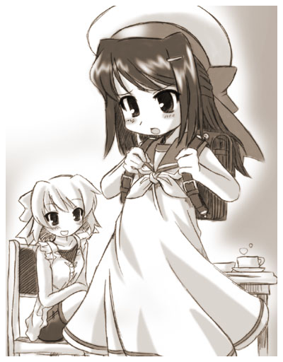
「そう言われても嬉しくもなんともない」
裕香が持ってきたのはワンピースのセーラー服だった。
制服ではなく普段着用だろう、白いベースに襟やリボンは空色の良くある物で袖がないノースリーブなのが涼しげだ。
ちなみにセットで水平さんの帽子まであって超可愛いぞ！ 俺にこんな妹がいたらめちゃめちゃ可愛がるだろうさ・・・妹だったらな。
・・・はあ、泣けてくるよ。
「あ、そうそう。はいこれ」
と言って裕香が俺にバッグを渡す。背中に背負うタイプの物だ赤いランドセルでないのは一応裕香の良心なのか？
「何が入っているんだ？これ」
「着替えだよ。万が一元に戻った時すぐ着替えられる様にね」
「お・・・おお、気が利くな」
相変わらず変なところに気が利く奴だ。
「まあね、その服少し汚すくらいなら良いけど、破ったりしないでね」
「ん？ これから服が破れる様な事はないと思うんだが」
「だってお約束じゃない、大きくなる時に服がビリビリって破れてイヤーンってやつ」
それは随分と偏ったお約束だと思うがな。
「ま…まあ。気を付けるよ。大切な物なんだな・・・」
この年までとっておいた服と言うことは結構大切にしていたのだろう。
大切な思い出がつまった服だったり、死んだおじいちゃんが最後にプレゼントしてくれた服だとか……
あ、いや裕香のじいちゃん、まだピンピンしてたっけ。
「それなりにね、と言っても伊織が思っているほどの物じゃないけど」
「そうか・・・、それにしてもこの格好で出掛けるのか・・・・・・」
元が俺だとは誰も気が付かないほど変わっているのが唯一の救いだけど・・・。
「用意はすんだのか？ ではそろそろ出掛けるとしようか」
「そうだね、いおりん手つなご」
「なんでだよ」
「迷子になったら困るでしょ」
「地元なんだぞ、迷う訳ないだろ」
「いいからいいから♪」
強引に裕香に手をとられてしまう。始終裕香は楽しそうでいい気なものだ。
そして俺たち３人は仲良く手を繋いだまま安曇神社へ向かった。
１０分ほど歩いた所で俺たちは安曇神社の取鳥居を潜っていた。
この姿になってからここに来るのは２度目だ。
ここから全てが始まったんだと思うと何とも複雑な気持ちになるよ。
神社の残骸は綺麗に取り除かれていたものの焼け跡にはまだ黒い煤が残っていた。
まだ３日しかたっていないし、建築が始まるのはまだ先なんだろうな。はやく建てて欲しい所だが、7こればかりはしょうがないか。
神社の敷地を抜けるとすぐに大きめな和風の家につく。ここが安曇神社を管理している小夜ちゃんの家だ。
「一応メール送っておいたけど居るかな？」
そう言ってから裕香はチャイムを鳴らす。
ほどなくしてガラガラと音をたて玄関の扉が開けられ小夜ちゃんが顔を覗かせた。
「やっほー」
「あ、裕香さん。お待ちしてました、どうぞ上がって下さい」
「ありがとー。じゃお邪魔しまーす」
裕香がずかずかと家の中に入っていく、それに続いて誠二そして俺も入る。
予想してたことだが、やはり小さくなった俺を見て驚く小夜ちゃん。
みるみるうちに顔が赤くなって目が潤んできている。
「あ、あの・・・この子は・・・？」
裕香に視線を向けて質問する小夜ちゃん。
でも体はこっちに向いたままで、手は今にもこちらへ伸びてきそうに構えている。
「え？ ああ、それ伊織だよ。今回の来たのがその話の事なんだけどね」
「ええ！？ そ・・・そうなんですか・・・」
視線をこっちに戻す小夜ちゃん、目が俺に抱きついてくる時の裕香みたいグルグルまわっている。
抱きつきたいが中身が俺なので遠慮して抱きつけないという心の葛藤が手に取る様に分かる。
「えっと、小夜ちゃん？」
「えっ！？ ああ、すいません。佐倉さんどうもです・・・か、可愛いですね・・・」
「う、うん。ありがと」
あんまり嬉しくないけど・・・。
「あ、あの」
「うん？」
「だ・・・抱っこしてもいいですか・・・？」
「ええ！？ お、俺を？」
「はっはい。・・・駄目でしょうか？」
「え、えっと・・・」
みんなは年下の女の子から抱っこしてもいいかなんて聞かれた事はあるかな？
俺はこの姿になるまで一度もない、当たり前だが・・・果たしてなんと答えればいいのやら。
余程俺に抱きつきたいのかフルフルと震えながら脂汗をかいている。ずいぶんとテンパっている表情をしているし、ここで断るのもなんか可哀そうな感じがする。
俺はあきらめて、「はあ」と軽くため息を付くと両手を小夜ちゃんに向かって広げた。
「いいよ・・・。おいで」
「いいんですか！？」
「まあ、少しくらいなら・・・」
「ありがとうございますっ！」
と言った途端にしがみつかれていた、年下の女の子にこんな風に抱きつかれる日がこようとは・・・なんとも恥ずかしい。
後ほっぺたをすりすりするのは勘弁願いたい。
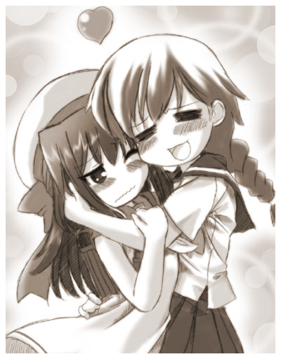
「わあ・・・」
「あ・・・あははは・・・・」
いくら今の俺が小さいって言っても中学生が抱えるには結構重いと思うんだが、小夜ちゃんはまったく苦もなさそうに俺を抱きかかえた。
俺をだっこしてご満悦な小夜ちゃんと対照に俺の顔は引きつっている事だろう。
くぅー早く終わってくれー。
「むー。なんか私の時とは随分態度が違う〜」
裕香が不満そうな声を上げる。
「どっちにしろお前は俺の許可なんかお構いなしに抱きついてくるじゃないか」
「まあ、そうだけどさ」
「小夜ちゃんそろそろ、いいかな？ 少し恥ずかしくなってきた」
「はーい」
といいつつ小夜ちゃんはなかなか俺を離そうとはしなかった。
居間に通された後、俺たちは昨夜の事を小夜ちゃんに簡潔に説明した。
小夜ちゃんは静かに俺たちの話を聞いていたが話が進むにつれ顔色が悪くなっていった。
「——————と言う訳なんだ」
「・・・・・・・・・」
「小夜ちゃん？」
「す、すいません！ うちのあずさ様の所為でそんな大変な事になっていたなんて・・・」
うろたえて深々と頭を下げる小夜ちゃん。
小夜ちゃんはぜんぜん悪い事してないのに・・・健気な子だ。
「い、いや大丈夫だから。この通り俺はピンピンしてるし、小さくなっちゃったけど・・・」
「むしろ私は今のままでもぜんぜんＯＫだけどね」
「巳嶋さん、それよりも前の様にあずさ様を呼び出してくれないかな？
またこんな事にならないように情報が欲しいんだ」
「えっ？ あずさ様をですか？」
「ああ」
「あの、えっと・・・」
「どうしたの？」
「すいません、出来ません・・・」
またも頭をさげる小夜ちゃん。
「ええっ？ 前は簡単に出来たのになんで今回は駄目なの？」
俺が驚いて聞くと、
「ええと・・・いらっしゃらないので・・・」
「え？」
「その・・・あずさ様がいらっしゃらないと呼び出す事が出来ないんです」
消え入りそうな声で一生懸命説明する小夜ちゃん。
「そうなの？」
前回はいとも簡単に呼び出しているように見えたから簡単に出来るのかと思ったのに・・・。
・・・ん？ なんか変じゃないか？
「でもさー、変じゃない？ あずさ様は伊織に取り憑いているんじゃないの？ 女になっているのがその証拠だって言っていたし」
確かに言ってた、しかもさぞ自慢げに。
「はい、私もそう思っていたんですが。今は佐倉さんと一緒じゃないみたいです・・・」
「えっとじゃあ、今の俺ってどういう事になってんの？」
「ごめんなさい、私にも何が何やら・・・」
「ふむ。伊織の今の姿は別に原因があるということか・・・？」
「と言うことは・・・。 あずさ様が俺から離れても元には戻らないって事！？」
それってかなり不味くない？
なんか話がまずい方向に行っている様な気がするぞ。
「まあ伊織、落ち着け」
「あ、ああ」
「巳嶋さん、何か他に気付いた事はないかな？ 些細なことでも構わないから」
「え、ええとそうですね・・・その・・・」
小夜ちゃんは俺の顔をちらりと見たがすぐに顔をふせて左右に振った。
まるで何かに気付いたものの自分でその答えを否定するようなリアクションだ。
「何か気付いたの？」
「いえ、その・・・そんな事はないと思うので・・・」
「間違っていても構わない、それに最初の馬鹿げた直感が正しいという事も良くある話だ」
誠二が先をうながす。
「は、はあ。 ええとですね。
私が普通の人には見えない物が見えると言う話はもうご存知だと思いますが・・・」
「うん」
「それは必ずしも形のある物ばかりではなくてですね、ええと魂といいますか気のようなその人の持つ生命力の様な物も見えるんです」
「うそっ！？ 小夜ちゃんオーラも見えるの？
やっぱりうちの隊員にならない？ 今なら映画の招待券付けちゃう」
裕香が即効で小夜ちゃんを勧誘する。
「いや、それもう前にやったから」
ややこしい事になる前に釘を刺しておく。
裕香は不満そうに「うー」とうなったものの大人しく引き下がった。
「どうぞ」
「佐倉さんの物はですね・・・」
「うん」
「あずさ様にそっくりなんです・・・」
「？？？」
それのどこがおかしいんだろうか？
前もそんな事言っていたし、あずさ様と同じようだとなにか拙いことでもあるんだろうか。
俺以外の人間も小夜ちゃんの次の言葉をまって固唾をのんだ。
「えっと、つまりですね。 今の佐倉さんは神様と同じものを持っている訳で・・・」
「つまり、伊織は神様になってしまったと・・・！？」
いち早く小夜ちゃんが何を言いたいか察知した誠二が唖然とした感じで言う。小夜ちゃんはその迫力に少し押され気味だ。
「い、いえっ！。そう決まった訳ではないんですけど・・・」
しんとした沈黙が部屋をつつむ。
全員がそのとんでもない事態を飲み込むのに数秒かかった。
「は…あはははは。 まさかねえ」
この空気に耐えられなくなって最初に口を開いたのは俺。
「そ、そうだよねえ人間が神様になるなんてねえ」
裕香も俺に同意する。
そうだよないくらなんでもそれはないと思うぞ、なあそこで考え込んでいる誠二もそう思うだろ？
「・・・確かに信じられない話だが。そう考えると今まで疑問だった事の説明がつくな」
「今までの疑問って？」
「伊織の神格の話や力の事、特に依りついているあずさ様との関係などだ」
「もう少し具体的に説明してくれ」
「つまり、なぜ依代になっている者の神格を上げる必要があるのか、またただの依代である伊織が力を行使できるのか。
そして何よりも依り付いてるいる筈のあずさ様が伊織の体で発言したことがないという所が前から疑問だったんだ」
「あ、そういえば。よくテレビなんかでも乗り移られた人は幽霊の方がしゃべるもんね」
「ああ、でも伊織本人が神様になっているとすればすべて辻褄があう」
いやいや、合わないって。
「でもさ、そんな馬鹿げた事があるのかな」
「今朝の事や今の姿を鑑みると・・・」
「いやいや、まだ断定するには早いと思うぞ」
なんと言うか、自分が神様になったなんて冗談じゃないぞ。
今でさえこれだけ大変な目にあっているんだ、これ以上厄介ごとを背負い込むのは勘弁してもらいたいところだ。
「どうなの？ 小夜ちゃん」
裕香が小夜ちゃんに水を向ける。
「えっと私にも分かりません。でもこんな後光をもった人に今まで会った事がないのは確かです」
「いったいどうなっているんだろう・・・」
「出来ればあずさ様本人にあって確かめるのが一番なんだが・・・」
「小夜ちゃん。なんとかならないかな？」
「すいません。私ではどうにも・・・」
「・・・そうか。ふう」
まったくいったい何がどうやってるのやら、ため息の１つや２つでちゃうよ。
「まあ、これ以上この事で話してもしょうがないか……この話はあとであずさ様を問いただす事にしよう！」
こんな話をしても心労が募るばかりだし、これ以上小夜ちゃんからは情報は出て来ないだろう。
今は早急に解決したい問題があるから、それを先になんとかしてもらわなくては。
「それはそうと小夜ちゃん」
「はい」
「取りあえずはこの体の大きさを何とかしたいんだけど、なんとかならないかな？」
「先ほどの仮説の通りだとすれば、また同じように人気を集めれば元に戻れると思いますけど・・・」
「やっぱりそうなのか・・・目立たない方法とかはないのかな」
「そうですねえ・・・あっ！ あの方に相談してみるのは・・・」
「あの方？」
「ええとですね。うちの敷地に大きな木があるのをご存知ですか？」
「あー、あの欅（ケヤキ）の木かな？」
小さい頃３人で登ったりして遊んだ覚えがあるな。
「ええ、あの木から元に戻れる方法をお話してみるのはどうでしょう？」
「へえ、そんな事が出来るんだ。って言うかあの木にそんな力が！？」
「一応ご神木らしいですよ、うちでは奉ってはいませんが・・・」
「う、うーん。昔の記憶をたどるとかなりぞんざいに扱っていた様な気がするけど・・・大丈夫かな？」
「そういえば伊織あの木におしっこ引っかけたり、蹴って落ちてきた虫を獲ってたりしてたね」
裕香が昔の事を思い出しながらニヤニヤする。
いらんことを言うんじゃない。
「うわあ〜、あの時はそんなこと知らなかったからな〜。怒ってなきゃ良いけど・・・」
「あはは・・・。断言は出来ませんが、多分大丈夫ではないでしょうか。あの方は心がとても広いので」
小夜ちゃん苦笑しつつも俺を慰めてくれる。
良い子だ・・・でもお願いだから頭をなでるのは勘弁してもらいたい。
「へえ、小夜ちゃんはあの木とよく話したりするの？」
小夜ちゃんが嬉しそうなのでなんとなく聞いてしまった。
「話すというのとはちょっと違うような気がしますが・・・とても良くして貰っていますよ」
少し、小夜ちゃんが誇らしげに言う。
「ふーん。じゃあ、いおりん頼んでみたら？」
「ああ、そうだな。他に案がある訳でもないし・・・」
裕香は話の矛先を変えて誠二に話しかける。
「それにしても誠二どうしたの？ さっきから黙りこくって考えているけど」
確かに誠二は先ほどから部屋の隅でずっと考え込んでいたな。
「あ、ああ。何か大事な事を忘れている様な気がしてな」
「大事な事？」
思わずオウム返しに聞いてしまった。
「ああ、さっきから思い出そうとしているんだが・・・むう・・・」
誠二は眉間に皺をよせて思い出そうとしているのだろうが、傍から見たらやばい人が怒りを押さえているようにしかみえない。
「忘れるくらいだから、そんなたいしたことではないんじゃないか？」
「あー、実は私もちょっと引っかかっているんだよね」
意外な事に裕香も誠二と同じらしい。
「裕香もか？ 何をそんなに気にしているんだ？」
「それが思い出せないから悩んでいるんでしょ。
でも、ま、思い出せない物は仕様がないし、今は後回しにしてご神木の方を先にしよ」
「まあ。そうだな」
俺たち４人は神社の方にもどった。大きな欅の木は社があった場所の反対側に立っている。
もう初夏なので盛大に伸びた枝には青々とした葉が茂っていて、そよ風が吹くたびにサワサワという小気味良い音をならしている。
この木がどのくらいの年輪を重ねてきたのかはわからないけどここにある他の木よりも多いのは確かなようだ。
こうしてみると確かに他の木とは違う存在感があるな。
「どうすればいいのかな？」
木の前に立った後、小夜ちゃんに聞いてみる。
「ええとですね。心を静かにして木に手をそえてください」
「うん」
２、３回深呼吸して、心を落ち着けてからそっと木に手を添えてみる。
「多分佐倉さんなら意識を木に向けるだけで解かると思いますよ」
「・・・・・・」
「佐倉さん？」
「・・・うん、よくわかる」
驚いた事に幹に手をそえた時にはもう理解できた。
小夜ちゃんが話す事とは少し違うと言ってた意味がよくわかる。
木との意思疎通は会話と言うよりも感情のやり取りと言ったほうが良い様な気がする。
木から伝わってくる感情は人のそれよりも複雑で繊細、そしてなによりも大きくてやさしいんだ。
あまりのここち良さに思わず木の幹に頬を寄せてじっと木からの感情に身を任せてしまう。
「伊織？」
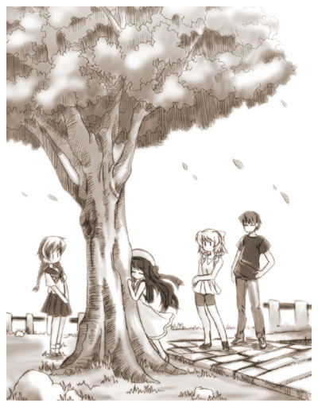
裕香が心配そうに俺に声を掛けるが今は木との対話にのめり込んでいるので返事を返す気にはなれない。
だいたい木から伝わって来た感情は暖かな歓迎と俺に対する好意。んで俺を励ますような意思がほとんどだ。
俺の体の大きさを元に戻す方法に関してはすぐに戻れるから安心なさいとの事だった。
だいたいそんなやり取りだったと思う、正確にはもっと複雑だったんだけど俺の語彙ではこれが限界。
会話を終えた俺は名残を惜しみつつ木から離れた。
「え？ もう終わったの」
裕香が驚いたように聞く、俺は余韻に浸っていたのですぐに口を開く気になれず黙って頷いた。
どうやら俺が思っていたよりも短い間だったらしい。
「ふう。この木がこんなだったなんて・・・」
「びっくりしました？」
小夜ちゃんが聞いてくる。多分俺がどんな気持ちでいるか解かっているのだろう。
「うん、驚いた」
「えへへ・・・」
俺が素直な感想を言うと小夜ちゃんは照れたように笑う、まるで家族を褒められた時のような感じだ。
まあ、小夜ちゃんにしてみればこの木も家族みたいな物なんだろうしそれもそうか・・・。
「どうだ、なにか収穫はあったか？」
「うーん、どうだろう・・・。ただすぐに戻れるから心配するなって」
「そうか、しかし・・・木の概念ですぐって言うのはどのくらいなんだろうな・・・」
誠二が気になる事を言う。
そう言えば木って何百年も生きる物だから時間の感覚なんて俺たちとは比べ物にならないほど長いんではないだろうか。
すぐって言っても何ヶ月もかかったりする事もあるのかもしれない。
「たぶん大丈夫だと思いますよ、確かに木の時間の感覚は人間のそれとは違いますがこの木はその事も心得ていらっしゃいます。
太陽が登って沈むことを感じられるのですから一日がどんなもの解かっていますよ」
小夜ちゃんが俺を安心させるように説明してくれた。
「そうだね、俺も今日にも戻れるくらいに感じたし。最悪２、３日くらいかな？」
「じゃあ、もうこの問題は解決したんだよね」
裕香が意気込んで俺に聞いてくる。
「まあ、そうかな・・・」
後は時間が解決してくれるって言うんだしそんなに悩む事もないか。
「と言うことは・・・これ以降は暇なんだよね」
あずさ様も行方不明だし、体の大きさを戻す目処もついたんだからもう他にやれる事もなさそうだ。
思ったより収穫が少なかったのは残念だけど・・・。
「うん、まあ暇かな」
「じゃあ、これから４人でどっか遊びに行こうよ」
まあ、裕香がこう言い出す事はなんとなく会話の流れから察知できたけどね。
正直もう家に帰ってごろごろして少ない睡眠時間を補充したい所だけど・・・。
昨日の夜から裕香にも迷惑かけたしな・・・俺に拒否権はなさそうだ。
「４人ってことは・・・私もですか？」
「ん？ 嫌かな？ それとも何か用事ある？」
「い、いいえ。でもお邪魔じゃないですか？」
「ん〜ん全然。小夜ちゃんなら大歓迎だよ。駅前に新しく出来たデパートで伊織を着せ替えて遊ぼ♪」
「ええ！？ 佐倉さんをですか？」
小夜ちゃんが驚いたように裕香に聞き返す、でも顔は興味津々と言った感じだ。
「勝手に人を着せ替え人形にするんじゃない」
強く出れない俺は小さな声で講義するも完全にスルーされる。誠二が哀れみに満ちたため息を小さくついたのが聞えた。
「いつもの伊織なら嫌がってやらせてくれないけど、今日はほとんどのお願いは聞いてくれると思うよ。ねーいおりん♪」
意味ありげな笑顔で俺を見る裕香。
「あ、あはは・・・」
う、こいつこっちの心情をわかった上で言ってやがる。
しかも小夜ちゃんを仲間に引き入れて俺を逃げられない状況に追い詰めてくるとは・・・。
「どう？ 伊織もこう言っている事だし」
俺は別に何も言ってないぞ、まあ小夜ちゃんを誘うのはやぶさかではないけど。
「えっと、ではご一緒させていただきます」
少しはにかみながらも嬉しそうに承諾する小夜ちゃん。
ちらちらとこちらに目を向けるのは俺があまり乗り気じゃないからかな・・・。
一応小夜ちゃんに笑顔を見せておくとしよう。少し引きつっているかもしれないが・・・。
笑いかけると小夜ちゃんは少し安心したようだ、照れた笑顔を見せてくれた。
この子ももっと笑顔を見せてくれると可愛いんだけどな。
「それじゃ、さっそく行きましょー」
またも裕香が高らかに宣言する。
その後ろで俺は半分諦めたようにため息をつくしかなかった。
「うう・・・、疲れた・・・」
もう時刻は夕暮れ、あたりは段々暗くなり始めて来る頃。
俺と誠二は２人で帰路についていた。
「大丈夫か伊織」
誠二が心配そうに俺に聞く。
「全然大丈夫じゃない・・・」
最近新しく出来た駅前のデパートについた俺達は最新のディスプレイや設備などを堪能する間もなく、幼児服売り場に行き、あれやこれやと洋服をとっかえひっかえさせられた、まあ小夜ちゃんも随分と楽しそうにしていたので俺は黙ってされるがままになっていた。
後半はデパートの店員も一緒になって楽しんでいた様な気がするのは気のせいか。
その後も大変だった、デパートの中に子供専門のフォトスタジオの情報を店員から仕入れた裕香は勇んで突撃し、またも俺をとっかえひっかえ着せ替えて写真を撮ってもらっていた。
２人も撮ってもらったらどうだと言ってみたが子供じゃないからと軽くあしらわれてしまった。
それを言うなら俺も子供じゃないんだけどな・・・。
そんなこんなで夕方まで俺は２人にひっぱり回され、こうして帰る頃にはクタクタになっていた。
ちなみに小夜ちゃんと裕香は先に家に送り届けた。まあこの時間に女の子をあまり一人歩きさせる訳にもいかないからな。
そして最後に誠二が俺を送ってくれているのだ、小夜ちゃんの前では男として疲れを見せなかった俺だが、誠二と２人になるとすぐさま本音が出てしまってこの様と言う訳だ。
「家はもうすぐだ頑張れ伊織」
「うー、もう歩けない・・・誠二〜おんぶ」
俺はその場にしゃがみ込んでしまう。
「な、何！？」
狼狽する誠二、なんだか俺が女になってから誠二を困らせてばかりな気がするな。
「この体だと歩幅が狭くて人一倍疲れるんだ。だからおんぶしてくれ〜」
そう言って誠二に向かって両手を差し出す。
誠二は諦めたようにため息を付くと苦笑いをしてからしゃがんで背中を向けてくれた。
「お前を背負うのは良いが寝ないでくれよ」
俺を負ぶって歩き出した誠二はこんな事を言った。
「？ なんで？」
「警察の事情徴収を受けるときにお前が寝ているとうまく説明できそうにない」
本気か冗談かはわからないが、確かにその問題は切実だな。
「ははは・・・。わかった、寝ないように頑張るよ」
こうして背負われていると本当に自分が子供に戻ってしまった気がする。
「それにしても、誠二今回は色々苦労をかけてすまなかったな」
「なに、気にする事はないさ。お互い様だからな」
「今度なにか俺が力を貸せる事があったら言ってくれ、すぐに駆けつけるからさ」
「それは頼もしいな。その時は頼むとしよう」
「ああ・・・まかせてくれ・・・」
それにしても広い背中だな・・・、誠二の背中ってこんなに大きかったっけ？ あ、俺が縮んでいるからか。
こうして背中に寄り添っていると適度な温もりを感じて瞼が下がってきてしまうな。
「・・・・・・」
「・・・・・・」
「・・・・・・ぐぅ」
「・・・寝るなよ」
「はっ！ だ、大丈夫。 寝てない寝てない」
俺と誠二はそんなくだらないやり取りを家に付くまで続けた。
そのおかげか最後まで寝ないで家に付く事が出来た。
「誠二、夕飯でも食っていけよ。どうせ今は家に誰もいないんだろう？」
家の玄関前で俺は眠い目を擦りながら誠二を夕食に誘う。
「そうだな、今回は俺も疲れてるしお言葉に甘えるとしようか」
誠二は少し考えた後に承諾した。
おそらく俺の気持ちを汲んでの返事なんだろう、強面の割りにそういう気の使い方をする奴なんだ。
「ただいまー」
「お邪魔します」
俺と誠二が家に上がる。
玄関の鍵は開いていたが、返事がない所を見ると母さんはいないようだ。
おそらく近所のおばさんとまた立ち話でもしているのだろう。
「何か飲み物を持っていくから誠二は先に部屋に行っていてくれ」
「わかった」
階段をのぼっていく誠二と分かれた後、俺は台所に入り冷蔵庫から麦茶をお盆にのせる。
はあ、体が小さくなっているからこんな事でも一苦労だよ。
そして俺がお盆からお茶をこぼさない様に慎重に階段を登って行くと部屋の入り口で立ち尽くす誠二がいた。
「？ 何やっているんだ」
「あ、ああ伊織か。いや部屋が随分と様変わりしたなと思ってな・・・」
俺の服が根こそぎ変えられたから前とは違った印象をうけるのかな。
なんとなく俺も自分の部屋を覗いてみる。
「うわっ。なんだこりゃ・・・」
俺の部屋はしばらく見ないうちに随分と少女趣味なものになっていた。
基本の家具などはそのままだがカーテンやベッドカバーががピンクのふりふりになっていたり、買った覚えのないぬいぐるみが置いてあったり。
よくもまあ短い間であのむさい部屋をここまで改造した物だ、もはや怒りを通り越してあきれてしまった。
「い、意外に冷静だな」
「まあな、人間疲れているとリアクションも地味になってくるものさ。ここで立っているのもなんだからその辺に座ってくれよ」
「あ、ああ」
俺の部屋には何度も来ている誠二だが今回は少し落ち着かないようだな・・・、まあ気持ちはわからなくないけどね・・・。
「まあ、お茶でも飲んで落ち着いてくれ」
「ああ、ありがとう」
しばらく２人で黙って麦茶をすすってのどを潤した。
「しかし、一日のうちにここまで部屋を変えてしまうとはな・・・」
「まあ、この行動力はさすが香苗さんというところだな」
「困ったもんだよ、まったく」
「・・・。その割には機嫌は悪くなさそうだな」
「んー。まあ拒絶されるよりましかなと思ってね」
「・・・そうだな。そういう意味では伊織はかなり恵まれているのかもしれないな」
「クラスの女子達におもちゃにされてもか？」
「ふむ。むずかしいところだ」
「まあ、でも感謝してるよ。特に誠二と裕香にはな、まあ裕香は自分も楽しんでいる節があるけどな」
「あれは裕香なりの気の使い方なのかもしれないぞ」
「どうだろうな〜。まあ、でも裕香の明るさには助けられるよ」
「・・・そうか」
「ああ・・・」
「・・・・・・」
「・・・・・・」
その後は２人で残った麦茶を黙ってちびちびやりながら疲れを癒す。
空白を会話で埋める必要はなく、２人で心地良い倦怠感に身を任せるそんな時間。
突然、沈黙を破ったのは、机の上から発した電子のチープなサウンドだった。
まあ、俺の携帯なんだけどね。
背伸びをして机の上の携帯を取る。画面を見ると裕香からだった。
「もしもし」
「あっ伊織？ やっと思い出せたっ！」
裕香は随分とあせっている様子で、いきなりこんな事を言い出した。
「何がだ？」
取り合えずこちらは冷静に聞いてみる。
「だから、昼間言ってたでしょ誠二と私がなんか忘れてるって」
「あー、ああ。確かにそんな事言ってたな…。・・・で結局なんだったんだ？」
「伊織の写真なんだけどね」
「あ、ああ・・・」
なんか嫌な予感がする会話だな。
「ネット上にある物は全部消したよね」
「ああ、ネット上どころか個人のＰＣの中まで根こそぎ消したぞ」
「そうなんだけどね、写真部の部長がねあの時写した物をプリントしてたの」
「うん？」
「でね、それを他の人に配らないでって言ってなかっったんだよね・・・」
「マジか・・・？」
「うん、いそいで電話したらもう結構配っちゃったって・・・」
「まさか・・・」
「うん、もうネットに少し流れてるみたい・・・ごめん伊織」
「・・・ふう。その事を失念していた俺も同罪だよ、裕香だけが悪い訳じゃない」
「・・・・・・でも。・・・・・・ねえ？ 大丈夫なの？体の方は・・・」
「体？」
そういえば、その話を聞いたとたんになんか体に力が流れ込んで来るような感覚がある。
少づつ体が元にもどっているんだろうか・・・・・・ってやばいっ！
「裕香、ちょっとまってろ」
「えっ？」
体が元に戻る前に服を脱いで置かなくては、一応裕香が大切にしていた服だからな。
こうして見ると結構服がつんつるてんになっている。危ない所だった、これ以上きつくなっていたら脱げなかったかもしれない。
服はワンピースなので脱ぐ事自体は簡単、さっさと脱ぎ捨てベッドに放る。
今は緊急時だからこれで勘弁して貰おう。
取り合えず裸のまま携帯を取る。
「待たせた、服は脱いでおいたから安心してくれ」
「あのね〜っ！！ そんな事より自分の体の心配しなさいよっ！ 大丈夫なの？ 今朝みたいな事になってない？」
「は？ ああ、そうか・・・」
そういえばそうだった・・・。
自分の体はほとんど元にもどりつつある、でも何だろう・・・・・・今朝とは何かが違う。
結構な力が集まって来ているのを感じるのだが、前の様な圧迫感がまるでないのだ。
疑問に思う間もなく答えが解かった。安曇神社の御神木様のおかげらしい。
どういう事かは解からないけど、俺と御神木様が見えない何かで繋がっていて、余分な力はそっちに流れていっている様だ。
自分の中で起こっている事に戸惑いつつも、これなら大丈夫という確信をもち安堵する。
「どうやら今回は大丈夫そうだ——————」
と俺が裕香に報告した時だった、完全に硬直している誠二と目が合ったのは——————。
思わず数秒間２人で見詰め合ってしまう。
「わっ！ あわわわわ・・・」
「い、伊織！？」
そうだった、誠二も居たんだった、今のごたごたですっかり存在を忘れていた。
思わず携帯を放り投げてしまう。
「なっ何！？ どっどうしたの！？」
裕香が携帯の向こうから何かわめいているが今はそれどころじゃない。
何か隠す物を探さなくては・・・。
取り合えずベッドからシーツ取ろうとする。
しかし自分で思っている以上に動揺しているのか足元にあるお盆に足を乗せてしまう。
お盆は絨毯の上をすべり俺はバランスを崩して、前のめりに倒れてしまう。
これが普通にこけただけなら笑い話ですんだんだが、倒れた方向に居たのが誠二だったのだ。
誠二は倒れてきた俺を上手にキャッチしてくれた、だがそのせいで抱き合う様な体制になってしまう。
しかも顔が凄く近い、まるで洋画の恋人同士がいちゃついている感じだ。
「・・・だ、大丈夫か？」
「・・・う。す、すまん」
「・・・・・・」
「・・・・・・」
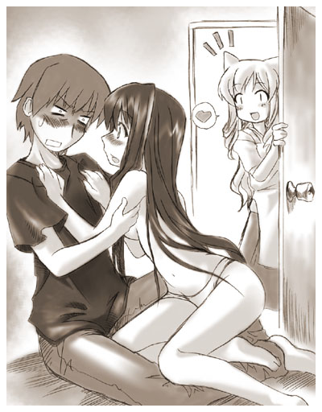
２人で思わず赤面して見詰め合いながら硬直してしまう。
なんか、この状況ってすごくやばくない？
裸で抱き合うって…ちなみにパンツはかろうじて履いてるけどね。
しかし、悪い事って続いて起こる物だね、俺は最近良くそう思うよ。
「伊織〜、帰ってきてるの〜？」
ガチャリと部屋の扉が開き母さんが顔を出す。
ちなみに母さんはノックなんかほとんどした事がない、いつもしてくれって言っているんだが直してくれた試しはない、この時ほどその事を恨めしく思った事はないな。
思わず三人で再び硬直状態へ。 人間本当に動揺した時って本当に動けなくなるよね。
座っている誠二の上に裸で抱きつくような格好でいる俺。この状態を見たら誰でも思う事は一つだろう。
「あらら・・・。お邪魔だったみたい、ごめんなさいね。おほほほほほ・・・」
完全に勘違いした母さんが言う。
「ちがっ 違うって！ ちょっとこけただけだって！！」
「ふーん。じゃあ、なんで裸なの？」
「それは・・・。え〜と、服が小さくなってきたんで・・・、破れる前に脱がないといけなくて・・・・」
なんだかしどろもどろになってしまう。
簡単に説明できるような事じゃないし。
「どーでもいいけど、キチンと避妊だけはしなさいよ」
「どーでもいくないっ！ ちゃんと話をきいてくれ〜」
その後母さんにすべてを説明するのに数時間を要した。
誠二はあまりのショックで何もしゃべれず真っ白になっていた。
母さん一応納得した様子ではたったけど、もしかしたら今でも疑っているのかもしれない。
俺と誠二の関係を・・・・・・・。
その日はそれからも大変だった、心配した裕香が家に押しかけてきたり。
誠二が寝る場所について母さんと口論になったり。
うわーん。なんだってこんな事ばっかり起こるんだ！・・・。
まったく頭痛の種が絶えないよ、とほほ・・・。
始めに目にはいったのは木々に茂ったあまりにも鮮やかな緑色の葉だった。
気が付くと俺はどこかの森の中に一人で立っていた。
緑色に輝く葉は上空を覆うほどではなく木漏れ日が地面を照らして幻想的な雰囲気を演出している。
地面は石作りになっていて歩きやすい。
道はずっと奥の方まで続いていて、向こうに光が見える、俺はなんとはなしにその光に向かって歩き始める。
いつの間にこんな所にきたんだろうか、母さんに説明するのに疲れ果て布団に入ったとこまでは覚えているんだが・・・。
周りからなんとなく視線を感じる何だろうと周りを見渡してみると木々の間からリスや鳥などの小動物がこちらに好奇の視線を向けている。
取り合えず危険はなさそうなので、俺はそのまま気にせず歩き続けた。
しばらく歩くとだんだん周りの景色を楽しむ余裕が出来てきた。
向こうの方には小川があるらしく水の流れる音が聞こえ、そよ風が吹くたびに木々が揺れてサワサワと音をたてる。
気が付くと周りからの視線が増えている様な気がする。
うさぎやきつね、いのししなどが増えていた、もはや小動物ではないな。
なんだか森の中を動物達と一緒に散策している様でだんだん楽しくなってきた。
そんなメルヘンな散歩を楽しんでいるうちに前方に家らしき物が見えてきた。
古風な造りの家だがこんな森の中にあるにしては豪勢で立派な家だった。
門も大きく時代劇に出てくる武家屋敷みたいに立派な物だった。
「さて、これからどうするか・・・」
なんとなくここまで来たのはいいが、別にこれといった目的があって歩いていた訳じゃない。
この屋敷についたのはいいが用がある訳ではなし、途方にくれてしまう。
俺が門の前でうろうろしていると門の小さいほうの扉が軋んだ音を出しながらゆっくりと開いた。
中から和服を着た物腰の柔らかそうで綺麗な女の人が出てきて俺に向かってニコリと笑いかける。
「伊織様ですね、お待ちしておりました」
そう言ってその人は会釈をした。
「は？」
一方の俺は突然知らない人から名前を呼ばれて素っ頓狂な声をあげてしまう。
「主が待っております、どうぞこちらへ」
その声を合図にしたように重そうな門の扉が軋みながら開く。
門が開ききった所でその女の人はさっさと中に入っていってしまう。
あわてて俺もそれに続く、気になったので門の裏を見てみたが誰もいない。
じゃあ門は誰があけているんだろうか。
「電動ですよ」
俺が門の事を気にしているのを見抜いたのか説明してくれた。
「電動ですか・・・」
ちょっとがっかりした。もう少し不思議な物かと思ったんだけど・・・。
そんな俺を見た女の人はくすりと笑う。
「残念ですか？ 一応この世界の物理法則も基本的には同じ物なんです」
「この世界？」
普段聞きなれない言い回しが気になってなんとなく聞いてしまう。
「おそらく薄々気が付いてらっしゃるとは思いますが、ここはあなたの住む世界ではありません」
いつもならこんな事絶対に信じない所だろうけど、確かにさっきから違う世界なんじゃないかなとは思っていた。
何故かと言われると説明しづらいんだけど色々と細かい所で違うんだ。
「・・・そうですか・・・。えっと、あの・・・あなたは？」
「ああ、これは失礼いたしました。私は里。ここの家事全般をまかされている物ですお里と呼んで下さい」
と言って丁寧にお辞儀をする。
礼儀正しい人だ、それに昨今ではあまりいない古風な印象を持つ人だな。
「あの、主って誰ですか？」
お里さんはまたやさしくくすりと笑うと、
「ふふっ。主から口止めされているので私の口からは言えません。ですが伊織様もだいたいの予想は付いているのでは？」
「ええ、まあ」
あいまいに返事をする。
やっぱりそうか、知り合いのなかで俺を別世界に招待するような人は一人しかいないからな。
全然知らない人って事もあるかもしれないけど、お里さんの口ぶりからするとそれはなさそうだ。
「ささ、どうぞこちらへ。ここで立ち話をして、主を待たせると私が叱られてしまいますから」
そんな事を言うお里さんは叱られるのを怖がっている様子は微塵もない。
まあ、そんな所からなんとなくここの主との関係が垣間見れるな。
お里さんの後について家に入っていく、土間を上がり大きな庭のある縁側をすすむ、時代劇で良く見る造りの家だ。
庭には砂利が敷き詰めてありおおきな池や松の木などがある。
お里さんは大きな部屋の障子の前で止まり、正座をして中にいる主人に呼びかける。
「伊織様がお越しになりました」
「通せ」
「はい」
お里さんが障子をゆっくりと開けてくれる。
長い黒髪を頭の後ろで複雑な形に結わいていて、普通のとは違う豪華そうな着物を着たその人物は、
いつもの様ににやりと俺に笑いかけてからこう言った。
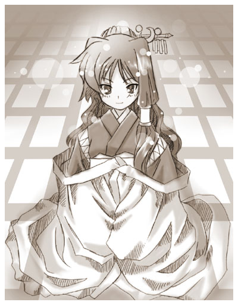
「遅かったな、伊織」
中にいたのは案の定あずさ様だった——————。
俺が部屋の中に入るとお里さんは一礼をして行ってしまった。
この部屋には俺とあずさ様の２人だけになる。
「そんなとこに突っ立てないでそこに座ったらどうだ？」
「え、は・・・はい」
始めに会った時は慌しかったのであまり気にならなかったが、こうして改めて見るとあずさ様は凄い美人だ。
ただ口元に浮かぶ意地の悪そうな笑みがそれを台無しにしているような気がする。
「フフフ・・・。何をそんなに緊張しているんだ。初対面と言う訳でもなかろう」
「ええ。まあ・・・そうなんですけど・・・」
あずさ様に促されて机の向かいに座る。
確かにあずさ様と会うのはこれが初めてではない。
でも始めに会ったのは小夜ちゃんを通して会ったし２度目はネットの世界でくたくたに疲れている時だった。
だからこうして落ち着いて面と向かって会う事はなかったのだ。
神様とこうして会話することなんて初めてだしなんとなく恐縮してしまう。
「まあ、お茶でも飲んで落ち着け」
気が付くと自分の前にお茶が入った湯のみが置かれている。
いつの間に入れたんだろう、まあ相手は神様だしこんな事でいちいち驚いていたらきりがないんだろうけど。
お茶を一口すする。冷たい喉越しがここちいい。
「あずさ様。ここは何処なんですか？」
「ここか？ ここは私の世界だ」
「あずさ様の世界？」
「まあな、神はそれぞれ自分の世界を持っているものだ。そして他の神を招待したり気に入った人間の魂を自分の世界に呼んだりするのだ」
神様の世界に招待されるのか・・・・・・ん？ それって・・・。
「もしかして・・・。俗に言う天国ってやつですか？」
「まあ、そう言う人間もいるな」
「も、もしかして俺・・・知らないうちに死んでたりするんですか！？」
そんな事をいう俺を見てあずさ様は一瞬驚いた顔をした後、可笑しそうに笑い出した。
「ククク・・・。馬鹿をいうな今のお前がそう簡単に死ぬ訳なかろう」
「笑いごとじゃないですよ、ここ数日波乱の毎日だったんですから。何があっても不思議じゃないと思ったんですよ」
「いやいや、フフフ・・・すまんすまん。ここにお前を呼んだのは私に色々聞きたい事があるだろうと思ったのだ。
ここなら邪魔がはいらずゆっくり話せるのでな」
今だ笑いの波が冷めやらぬあずさ様は笑い出すのを堪える様に言う。
そんなに可笑しい事言ったかな・・・。
「ええ、聞きたい事はいっぱいありますよ。ええと・・・」
うわ〜。まさかこんな突然にあずさ様に直接質問出来るチャンスあるとは思ってなかったからなあ。
聞きたい事があまりにも多すぎて何から聞いたらいいのやら・・・・。
「ええっと・・・。あ、あのお里さんってこの世界の人なんですか？」
混乱した俺がひねり出した質問はこれだった。
一番初めに思いついたのがこれだったもんだから思わず口に出してしまった。
「あ？」
恐らくあずさ様が予想した質問とはかなりかけ離れた物だったのだろうポカンとした顔になるあずさ様。
神様でもこんな顔するんだねちょっとびっくりしたよ。
「ク・・・・・・ククク・・・。 一番初めに聞いた質問がまさかお里の事とは・・・これは傑作だ・・・なんだ？惚れたのか？ ククク」
堪えられないという感じで身をよじって笑うあずさ様。
その姿があんまりにも神様と言うイメージからかけ離れたものだったので、なんだか緊張のが馬鹿馬鹿しくなってしまった。
「ち、違いますよ。急に質問するチャンスが出来たので焦ってしまっただけです」
「ほう、なんだ？ 緊張しているのか」
「しょうがないじゃないですか、こっちは神様に招待されるなんて驚天動地の出来事が起こっているんですから」
「フフフ・・・そうだな。まあそんなに気を張る事はないぞ、それとも今のやり取りでほぐれたか？」
「まあ・・・少しは」
「そうかそうか。 ああ、お里はな、私がこの世界を作った時からここの住人なのだ。
お前が気に掛けていたと言ったら大いに喜ぶだろうさ。フフフ・・・」
楽しそうな笑みを浮かべてあずさ様は言う。
「はあ、そうですか・・・」
「まあ、ここでお里の事を延々と話しても埒があかないからな。こっちからお前の知りたい事を教えてやろう」
「ええっと、じゃあお願いします」
そういう意味で聞いた訳じゃないんだけどな。
「取り合えず今知りたいのは目下の所、今のお前が神なのかどうかと元に戻れるのかであろう？」
「ええ、そうです。なんだか始めの時とは随分違う様な気がしますし・・・」
「まあ、そうだな・・・。ふむ。それはそうとお前は神になってみる気はないのか？」
さらりととんでもない事を言うあずさ様。
「じょっ冗談じゃないですよ！ これ以上厄介ごとを背負い込むのは御免です」
「ほお、神の力が手に入ると言うのにそれを辞退するのか。ふむ、お前は変わっているな」
人に酷い評価をしつつあずさ様は嬉しそうに言う。
「そんなことよりも、どうなんですか？ あずさ様」
あずさ様の話が横道に逸れそうだったので矯正して本筋に戻す。
「今のお前は私の依代だ、それは間違いない。ただな、存在自体は我々に限りなく近い所にいるな」
「えっと、それはどういう事ですか？」
「ほとんど神に近い存在になっていると言う事だ」
「な、ななななな・・・なんでそんな事に！？」
「まあ、落ち着け。お前がある程度の力を持つ事は予想の範疇だったのだ、・・・しかし偶然に偶然が重なった結果、お前は私の想像以上の成長を見せたと言うところだな」
「元には戻れるんですか？」
思わず今一番俺が気になっている質問をする。
「お前にその気がある限り問題はない。神社の社が完成すればすぐにでも戻してやる事が出来るぞ」
「そうですか・・・ふう」
安心した。俺があきらめなければ問題ないのか・・・。
「だが、事はお前が予想するよりも難しいかもしれんぞ」
「え？何が難しいんですか？」
「お前も少しは解かっているんじゃないのか？ その体の性能が格段に高い事は。
普通の人間がその様な力を手にしたら放したくないと思うのが普通だ、お前も結構気に入っているのであろう」
「まあ、あずさ様の言いたい事は良くわかりますよ」
確かにこの体になってから体調は良いし五感は鋭くなっていて運動能力なんかは人類を軽く超えている、そして様々な力を行使出来きて、おまけに見た目も抜群だって言うんだからまさに夢のような話だ。
「まあ、体が女でなければそう思ったかもしれませんね・・・。でも未練があると駄目なんですか？」
「あまりに強いとな。ま、お前にその気がないならば問題なかろう。それに戻りたくないならそのままでも私は構わん」
「俺は構いますよ」
「そうか？ ククク・・・」
「・・・・・・。まだ何か隠していますよね」
「まあ、そうだ。 実の所、話すべきかどうか考えている所だ」
あずさ様は悪びれる事なくこんな事をいった。
迷っているって事はあんまり良い話じゃないんだろうな・・・。
「話してください。どうせこの分だと今聞くか後で聞くかの違いしかないんじゃないですか？」
「フフフ・・・そうだな。
お前も気付いているように私はあまり隠し事がうまくない。なんせ私は根が善良な乙女だからな。ククク・・・」
「善良な乙女？」
「おいおい、そこは流す所だぞ。まったくお前までお里みたいな事を言うものではない。
まあ、私もあまり引き伸ばすのは好きではないからな一応一通り話してやろう」
「お願いします」
「さて、何処から話した物かな・・・。
———以前にお前が私に借りを作った時の事を話したな」
「ええ、聞きました。結構ショックでしたよ」
子供の頃怪我をした裕香と誠二を治してもらえるようにあずさ様と取引したんだった。
「あの時、お前は恐らく誠二と裕香は死ぬほどの怪我をしたと思っただろう」
「は？ ええ。そうですけど・・・」
「実はあの時２人の怪我は命に関わるほど酷い物ではなかったのだ」
「ええっ！？ あ、あずさ様嘘ついたんですか！？」
「罰あたりな事をいうな。私はあの２人が死にそうだったなどとは一言も言っていないぞ。ま、お前がそう考えるように仕向けたのは私だがな。ククク・・・」
「じゃ、じゃあ。俺があずさ様にお願いしなくてもあの２人は大丈夫だったんですか。
「まあそうだ、しばらく入院生活を送る事にはなっただろうがな」
「そ、そんな〜」
思わずがっくりしてしまう、なんだか凄く損した気分だよ。
「おいおい。本番はここからだぞ。 実はな、死にそうだったのはあの２人ではないのだ」
「・・・・・・え？」
なんか今凄く嫌な話を聞いた気がする。
「実はな、お前なのだ。
あの事故で死にかけた———
というか一度死んだのは」
「・・・・・・」
「・・・・・・」
「えっと・・・。俺、実はつぶ餡の大福って結構好きなんですよね」
「現実逃避をするでない」
「だって〜。あずさ様〜」
「こらこら、甘えた声を出すな。話は最後まで聞くものだぞ。
いくら神でも死んだ人間を蘇らす事は難しい、
そこで私の一部をお前に移植したのだ。
私の因子を授かったお前はその時から神となり一命を取り留めた。
傷が完全にふさがるのを待ってからお前の力を私の依代に封印したと言う訳だ」
「ちょ、ちょっと待って下さい。じゃあ俺は子供の頃に一度神様になっているんですか？」
「いや、あの時からずっとお前は神だったのだ。ただ力を封印されていただけの話でな」
「・・・・・・」
「その後はお前も知っての通り社が焼けお前の封印が解け、お前は神に戻ったという訳だ」
「じゃあ、最初からあずさ様が俺に取り付いたから女になったのではなく力が戻ったから女になったという事ですか？」
「ククク・・・・・。まあ、私（の一部）が取り付いた事には変わりなかろう？」
「そんなの詭弁ですよ〜」
「それは視点の違いというやつだな。
今はそんなお前を私が依代にしていると言う訳だ」
「そ・・・そんな〜」
「本来はお前が死ぬときまで教えるつもりはなかったのだがな、こうなってしまった以上はお前も知っておいた方が良いだろう」
「うう〜、聞かなきゃよかった」
「聞きたいと言ったのはお前だぞ」
「そうですけど・・・・・・」
「そんなに過去に囚われる事はない。お前が男に戻れば万事解決であろう？」
「ま、まあ。確かにそうですが、そう簡単には納得出来ないって言うか・・・」
「なんだ、私の娘になるのはそんなに嫌か？」
「む、娘！？」
「そうであろう、お前は私の一部を授かって神になったのだ、云わば私の子と言っても問題あるまい？」
「えっとそういう解釈になるんですか？」
良く解からないがそういう事になるんだろうか。
まったくその自覚はないんだけど・・・。
「なんだ、自覚がないのか？ なんならここで契りでもかわすか？」
あずさ様が今までとは違う妖艶な笑みを浮かべる。
以前、こんな表情を見たのは小夜ちゃんに取り付いていた時だったけど、今回は本人がやっているので、ちぐはぐな感じはしない。
あずさ様は凄い美人なのでそんな表情がとても色っぽく、思わず俺の頬が熱くなってくる。
「え、えっと遠慮しときます」
あずさ様が俺の頬に手で触れてくる。いつの間にこんな近くまで来てたんだ？
それにただほっぺたを撫でられているだけなのに、なんなんだこの気持ちよさは。
「まあ、そう言うな。他愛ない親子のスキンシップだ」
「親子はこんなスキンシップはしません〜」
「そうか？ なら接吻なら良いだろう？ 親子ならそのくらいするだろう」
あずさ様が顔を近づけてくる。甘い良い香りが鼻腔をくすぐり何だかぼうっとしてくる。
「ひえ〜。しませんっしませんよ〜ってどこ触ってるんですか！？」
いつの間にかあずさ様の手が俺の胸を揉んでいた。
「なに、ただのじゃれ合いではないか」
「親子のじゃれ合いでこんな事はしません〜」
「まあ、よいではないかよいではないか」
「ひええ〜」
あずさ様から香る甘い香りとツボを心得た攻めに何が何だかわからなくなりかけた頃、障子がさっと開いてお里さんが顔を出した。
「あずさ様。お食事の準備が出来ました」
そのとたんに、むっとなるあずさ様。それと同時にあずさ様の手が止まる。
た、助かった〜。
「あらまあ、もしかしてお邪魔でしたか？」
芝居じみた口調で大げさに驚くお里さん。
「お里。お前狙ってやったな・・・」
あずさ様がうらみがましくお里さんに言う。
「とんでもございません。私の事は気になさらずにどうぞ続けてくださいまし」
コロコロと笑うお里さんにあずさ様はあきらめた様にため息を付く。
なんだかお里さんには頭があがらないみたいだな。
「もうよい、興が削がれた」
やっとあずさ様が俺を解放してくれる。やれやれだ。
お里さんを見ると俺にウィンクしてくれる、やっぱり俺が困っているのを見て助けてくれたんだ。
「それにしてもあずさ様、あまりせっかちだと伊織さんに嫌われてしまいますよ」
「む、そうか？ しかしぐずぐずしていると裕香や誠二に取られてしまうかもしれんではないか」
「こういう事はキチンと順番を守らなければなりません。あせらずゆっくり時間をかけて落としていくものです。
それに体だけというのは面白みにかけます。もう少し好感度を上げてからにしてくださいまし」
何だかギャルゲーの攻略法を話しているような会話だな。
「ふむ、落としかけの所を狙う訳かそれも良いかもしれんな」
「あ、あの〜。そういう話は本人がいない時にして下さい」
そんなにあからさまに話されると恥ずかしくなってしまうじゃないか。
「ククク・・・。なに、こちらの気持ちをお前に解からせた方が良いと思ってな」
「充分に解かりました、俺の貞操の危機だということが」
これからは油断しないようにしなくては・・・。
「フフ・・・ お前は本当に面白いな。まあ、今は食事にするとしようか。お里。」
「はい。伊織様こちらへどうぞ」
お里さんが食事が用意してある部屋へと案内してくれる。
食事はとても豪華な物だった、いかにもと言った感じの鯛の塩焼きや刺身の活け作り、など割烹料理屋で出されてそうな物が所狭しと置かれていた。
「伊織。まあ一杯やれ」
用意された席に俺が座ると横からお里さんがお猪口にお酒を注いでくれる」
「俺、未成年ですからお酒はだめですよ」
「何、気にする事はない。それはお前がいる世界の話、ここは私の世界だ、その法はここでは適用されん」
「え、でも・・・」
正直、お酒に興味がない訳でもないし。今は特に酔っ払いたい気分だ。
ま、少し付き合うならいいだろう。
「まあ、そこまで言うなら・・・」
「ぐっと行け」
あずさ様に促されるままお猪口にはいった酒を一気に飲み干す。
「・・・・・・うわっ。これは何ですか？」
「美味いだろう？」
「ええ、こんなの初めてです」
たぶん日本酒なんだと思う、前に親に隠れて裕香や誠二と一緒に飲んだ事があるけどその時の物とは随分違う。
ちゃんと酒の味があるのに飲みやすくてさわやかな甘みがある。っていうか無茶苦茶美味い。
「ささ、料理の方も召し上がってくださいね」
お里さんが俺のお猪口に酒を注ぎながら料理を勧めてくれる。
「あ、はい。頂きます」
「ククク・・・。今日はめでたい日だ、好きなだけ飲み食いしてゆくがいい」
その後はあずさ様の言葉に甘えて、たっぷりと美味い酒と美味い料理をご馳走になった。
正直途中からの記憶はあまりない。なんだかあずさ様から力の使い方や神としての在り方の講釈などを聞いた気がするけどほとんど内容は覚えていない。
たぶん生まれて初めて酒に酔いつぶれたんだと思う。
一番最後の記憶はなんだかとても幸せな気分だった事だけでその後は完全に闇の安息感だけだ。
次に俺が目を覚ましたのは自室のベッドの中だった———。
窓からは朝日が差し込み、外から雀の鳴き声が聞こえる。
さわやかな朝だ。
「夢———？」
夢だったのか？
あずさ様の世界に連れて行かれて衝撃の告白を聞いて、美味い料理を飲み食いしたのは・・・。
「ふう、なんだ夢だったのか〜。 嫌な夢をみたな〜」
いやあ、我ながらおかしな夢を見た物だ。
「残念ながら夢ではないぞ」
「え！？」
こ、この声は・・・・・・もしかして・・・・・・。
「ククク・・・。こっちだ」
「わっ！？」
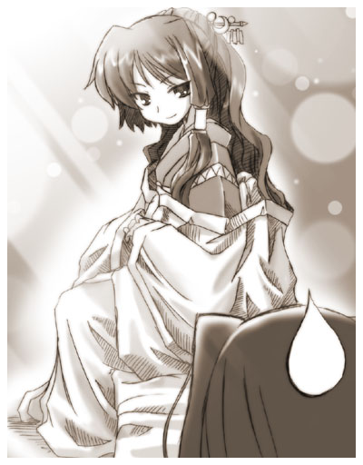
足の方をみるとあずさ様がベッドの上に座っていた。実体で。
「お前が昨夜の出来事を夢と誤解しなようにわざわざ会いに来てやったのだ。ククク・・・」
「そ・・・その為にわざわざ？」
「大事な事だからな。それからお前には神であることのなんたるかは何も解かっていなかろう？」
「そりゃあ、まあ」
昨日の今日で判れっていう方が無茶だ。
「これからは気軽に向こうに来るがいい。道は繋げておいたからお前ならば気軽に行き来できるぞ」
「は、はあ」
「では、私は戻るとしようか。ではな我が娘、これからも精進するがいい。ククク・・・」
いつもの悪役の様な笑い声を残しあずさ様は掻き消えた。
夢だと思わせないように出てきた割には消え方が幻みたいですよあずさ様。
「はあ」
思わずため息が出てしまう。
あの夢の事が本当だとすると裕香や誠二になんて言えばいいんだろうか・・・
しばらくうんうん唸った後、俺は考えるのをやめ。
やさしい温もりが残る布団にもどり心地良い２度寝の世界に旅立つのであった。
無粋な目覚まし時計がけたたましいく起床を促すまで。
＜第４話へつづく＞
◆ あとがき ◆
みなさんお久しぶり又ははじめまして。乾でございます。
あいも変わらず携帯小説も真っ青な日本語の本作を最後まで読んでくださってありがとうございます。
出来れば感想を一筆書いて下さると泥の中を転げまわる豚の様に喜びますがどうですか？（笑）
前回出来るだけ早く投稿しますと言っておきながら半年以上もかかってしまうとはなんとも申し訳ないです。
もしかしたらこのまま消滅してしまうのでは、と思った方も多いのではないでしょうか？
次回こそはと言いたい所ですが…なんか次も長くなりそうなので、まあ期待しないで待ってやって下さい（笑）
さて今回の話は如何だったでしょうか？
いつもよりボリュームは少なめだし、なんだか通してまったりムードだったので物足りないと感じた方も多いのではないでしょうか？
実を言うと今回の話は大幅に変更と削除を繰り返しました、なので辻褄が合わなかったり違和感があったりすると思います。
何より幼女の伊織をあまり生かせなかったのが非常に心残りになってしまいました。
まだまだ精進が足りませんね。またそのうちに伊織が幼女になるエピソードを書きたいです。
次回はおそらく体育祭の話になると思います、頑張って書きますのでどうか見捨てないでやってください。
それではまたあえる日を、ごきげんよう。乾でした。
戻る
□ 感想はこちらに □
こっそり公開 おまけまんが
やはり見つけてしまった様ですね……。
実をいうと今回の話があまりにもアレでしたので外伝の漫画などを描いてお茶を濁そうと思ったのですが…。
その漫画自体もちょっと人に見せるのを躊躇してしまう出来になってしまったので、こっそり公開です（笑）
ま、まあせっかく見つけたんですから読んでやってください。少しでも楽しんでもらえたら嬉しいです。
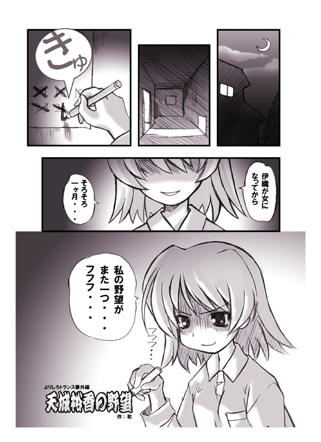
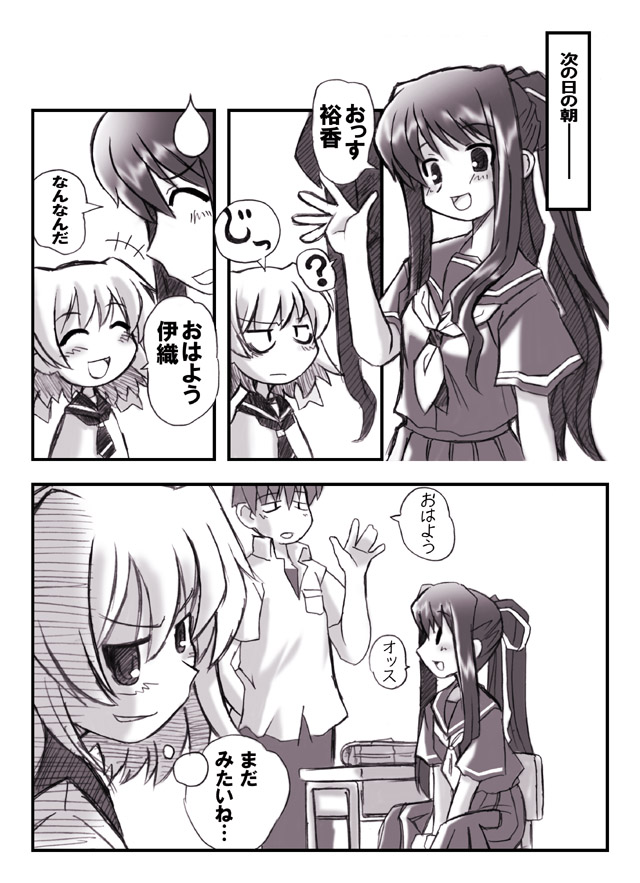
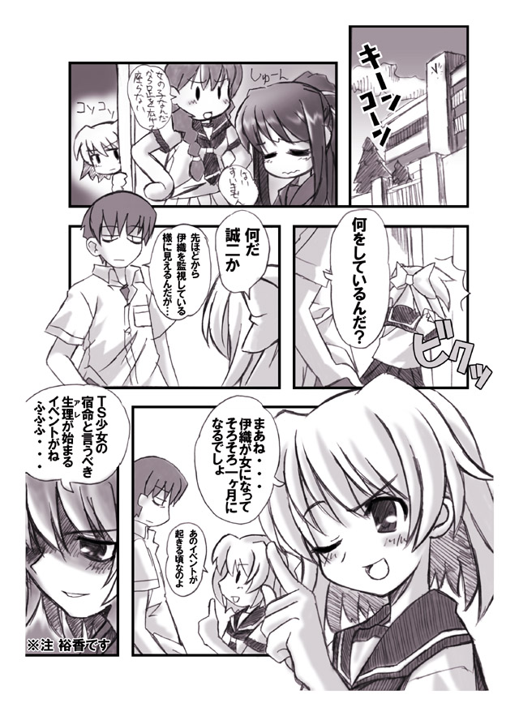
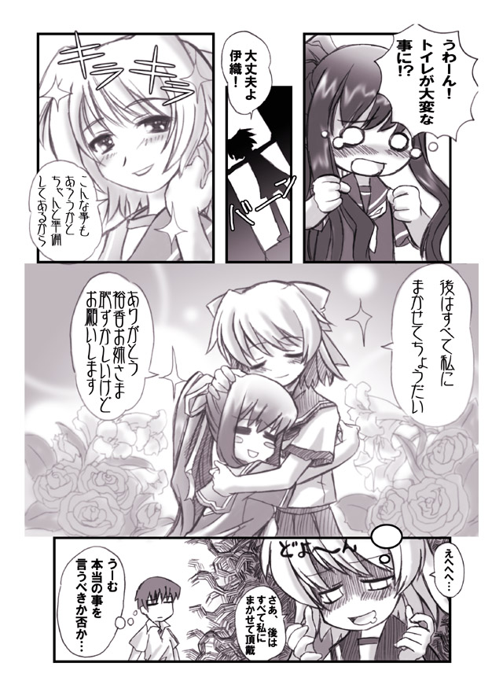
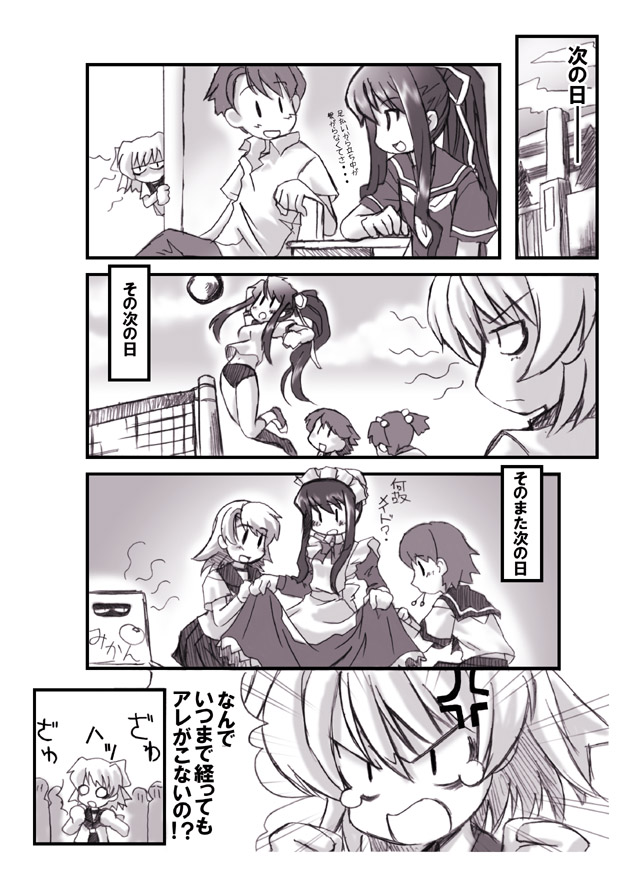
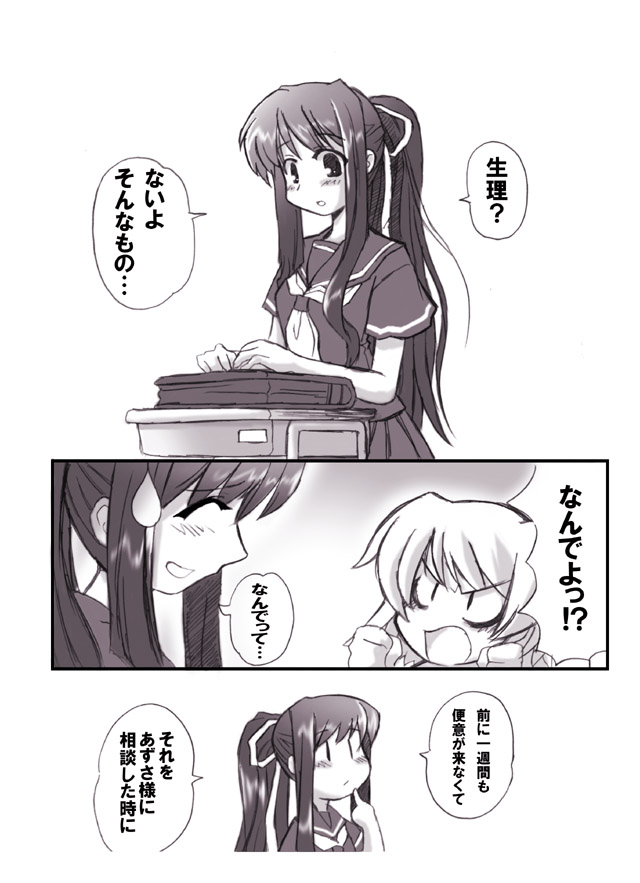
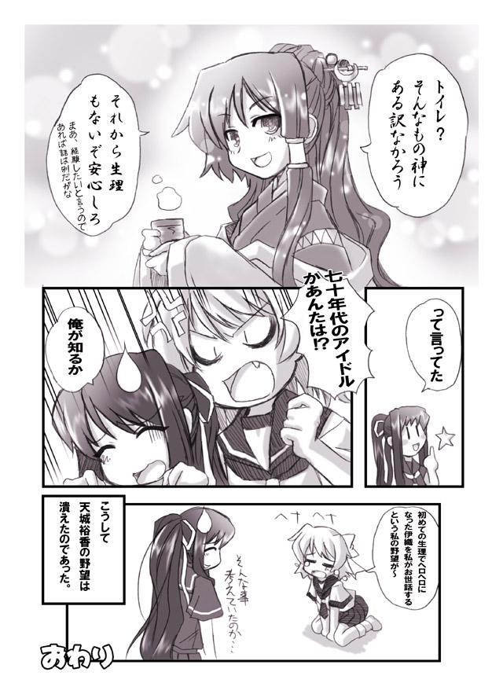
如何でしたでしょうか？
描いてる時は楽しかったんですが、いざ出来上がって読んでみるとなんだこりゃって言う物になっててちょっとショックでした。
漫画も難しいですね、こっちの方も精進しなくては…。
まあ、これでもいいから描けというリクエストがあればまたこっそり描くつもりです。
それでは最後まで読んで下さってありがとうございました。
ごきげんよう乾でした。
戻る
□ 感想はこちらに □